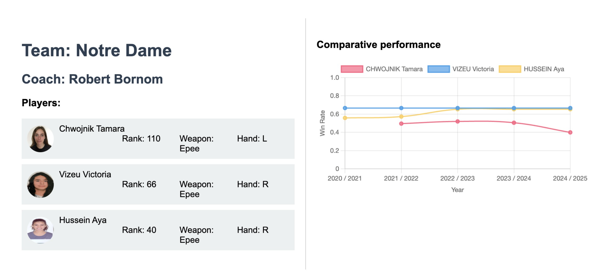
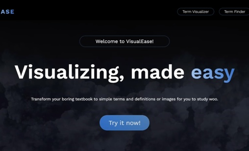
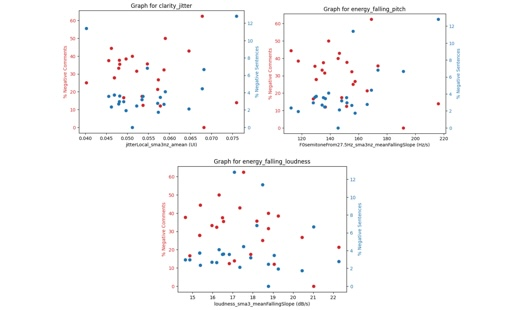
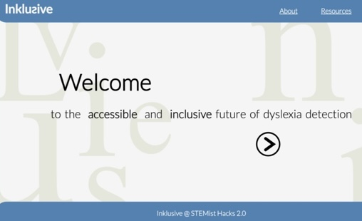
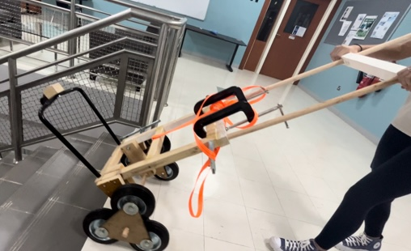

Acid Mine Drainage Visualization

The project leverages Google Earth Engine and satellite imagery to remotely monitor and send chemicals for environmental management. By utilizing satellite data, the system tracks and assesses chemical usage and distribution across various regions. This approach provides an efficient, real-time solution for monitoring environmental impacts.
EnGarde

EnGarde is a web platform designed to streamline the fencing recruitment process, bridging the gap between international athletes and U.S. collegiate coaches. The platform allows fencers to create profiles showcasing their skills, rankings, and practice footage.
VisualEase

VisualEase is an innovative memory training web application designed to enhance active recall through AI-generated images and an interactive flashcard interface. The seamless and responsive front-end experience is powered by LLAMA3, Node.js, and Flask.
Podcast Audio-Textual Research

This machine learning project analyzed audio stylistic and textual variations linked to listener sentiments in news podcasts. Using OPENSMILE and TextBlob, I analyzed transcripts and listener feedback from 30 NYT podcasts to understand audience engagement.
Inklusive

Inklusive is a web application developed to detect letter reversals, a common symptom of dyslexia, in handwriting. By employing Keras OCR and Python TensorFlow, we processed handwriting samples on a large scale.
Solutionsists

As part of the Solutionsists team, we created a book mover cart for the Qatar National Library. We used CAD software and 3D printing techniques to develop an innovative tri-wheel mechanism to enhance library accessibility.
Contact Me!